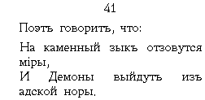
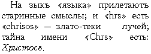
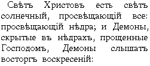
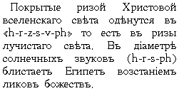
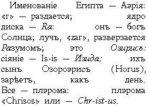
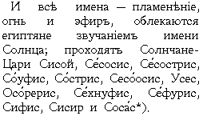
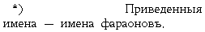

Glossolalia (Section 41)
GLOSSOLALIA

The poet says that:
Onto the rocky tip worlds are called forth,
And the Demons exit their hellish lair.

To the toot [zyk] "of the tongue [yazyk]" olden meanings fly in: and "hrs" is "chrysos" -- the golden-flows of rays; the mystery of the name "Chrs" is: Christ.

Christ's light is the sun's light, which enlightens us all: enlightening the nether world; and the Demons, concealed in the nether world, are forgiven by the Lord, the Demons hear the ecstasy of resurrections:

Covered with Christ's riza of the light of the universe they clothe themselves in "h-r-s-v-ph" that is in rizas of ray light. Along the diameter of the sun's sounds (h-r-s-ph) Egypt gleams with the rising of the countenances of the deities.

The name of Egypt is -- Aeria: "r" -- resounds; the core of the disk is -- Ra: he is -- god of the Sun; the ray, "zar," dissimulates Reason [Razum]; this is Oziris: the shining is -- Is-is is &emdash; Izida; their son Ozoroeris (Horus), glows red like the day. All are -- the pleroma: the pleroma of "Chrysos" or &emdash; Chr-ist-us.

And all the names are -- aflame, fire and ether; the Egyptians clothed the names of the Sun with sound; the Sun-Gods proceed: Sisois, Sesosis, Sesoustris, Soufis, Sostris, Sesoosis, Ouses, Osoreris, Sekhnoufis, Sefouris, Sifis, Sisires and Sousas.

*The names provided are names of Pharoahs.